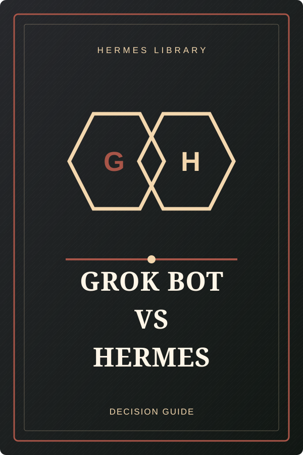

THE READING ROOM
เลือกหนังสือจากชั้น
เปิดอ่านคู่มือฉบับเต็มได้ทันที ทุกเล่มจัดเก็บเป็น HTML อ่านง่ายบนทุกอุปกรณ์
/
แสดงหนังสือทั้ง 11 เล่ม
ยังไม่พบหนังสือเล่มนี้
ลองค้นหาด้วยคำอื่น หรือเลือก “ทั้งหมด” เพื่อกลับไปดูทั้งห้องสมุด